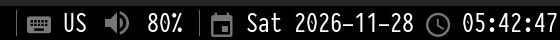

M1: monitor brightness/contrast block
Your note (2026-11-28): "add a widget to control the brightness and contrast on my monitors. Each monitor should have widget only for itself, not for both monitors." This page decides how the block looks and how you change the two values. Answer in the chat with the line at the bottom.
Today

Question 1: one value with a mode switch, or both values?
B. Two values side by side recommended
A. One value, click to switch
Why the designer is against A: half of the state is hidden, and you have to check the icon before every scroll; the bars have enough room for both.
C. Both values, click picks which one scrolls
Why the designer is against C: still a mode, and grey already means "stale or idle" in this bar, so the grey contrast looks broken.
How the states look (same for every option)
Picks
What doesn't change
- Each bar controls only its own monitor (DP-0 bar: MSI G281UV, DP-2 bar: Ugreen AirPanel 16), found by EDID, not by bus number.
- Scroll step 5 (0-100); the number changes at once, the monitor follows within about half a second.
- Hover shows the monitor name, both values and the click help.
- No sudo; the block hides itself where ddcutil or i2c access is missing (e.g. the other user).